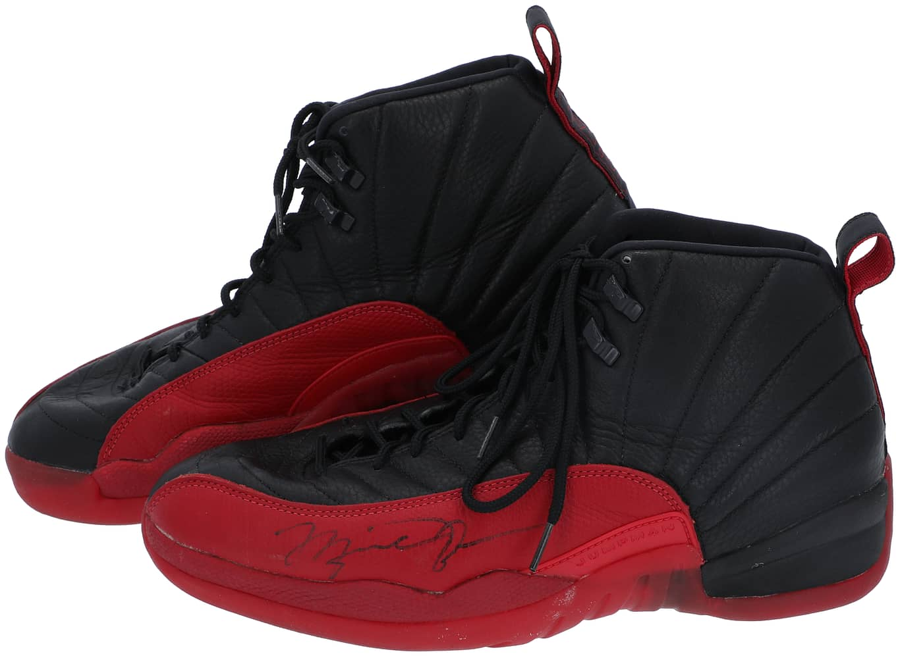
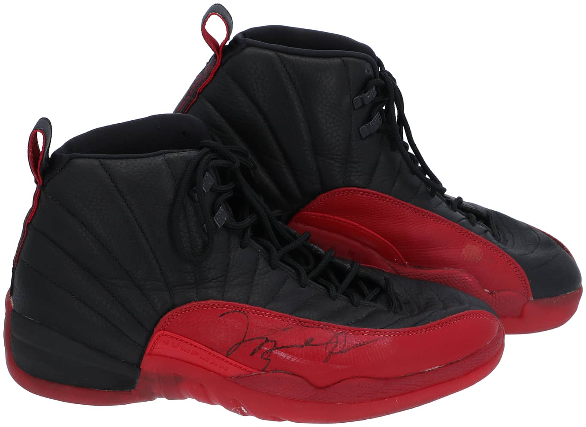
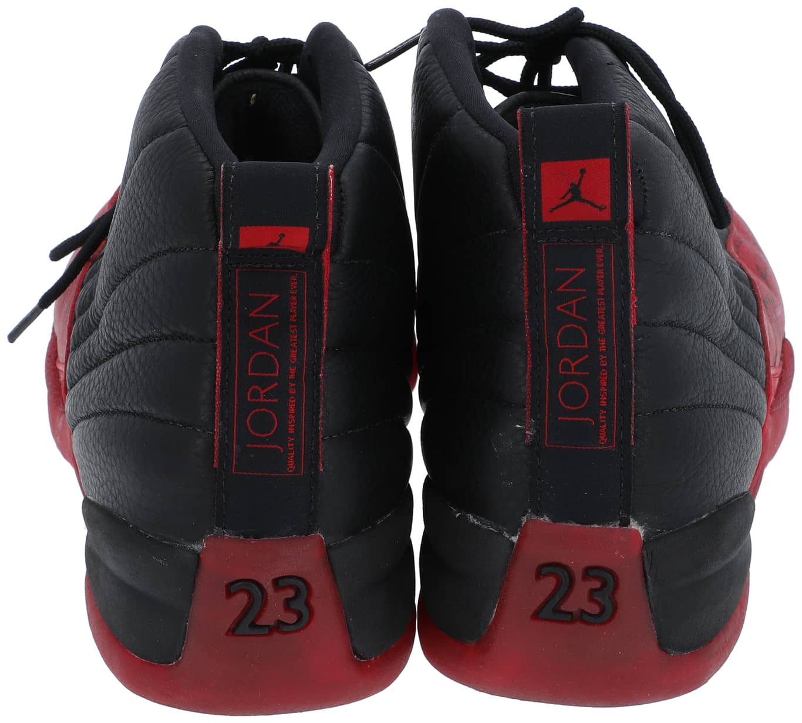
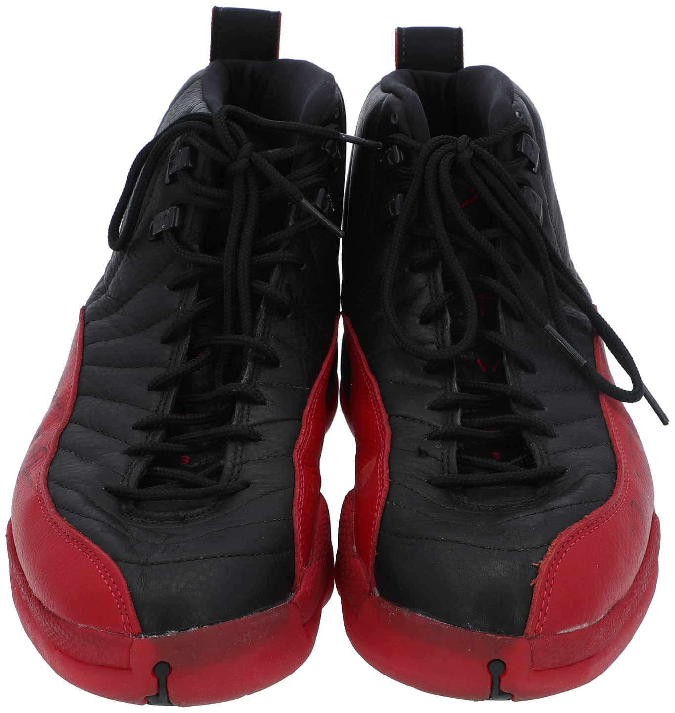

Air Jordan XII worn verse the Utah Jazz.
Attributed to the historic Final Game 5, Flu Game.
Public Sale
- Auction House: Goldin Auctions
- Sale Date: June 14, 2023
- Lot #: 1
- Sale Price: $1,380,600
Photo Match Details
- Photo-Matched: Yes
- Games Photo-Matched: 1
- Photo-Matched By:MeiGray, SIA
Research & Provenance
- Provenance comes from Preston Turner, former ballboy for the Utah Jazz. Michael Jordan signed them while Preston watched and as he was given the pair in the locker room, directly after the June 11 game.
- They have been in Preston's possession since that night and until this sale.